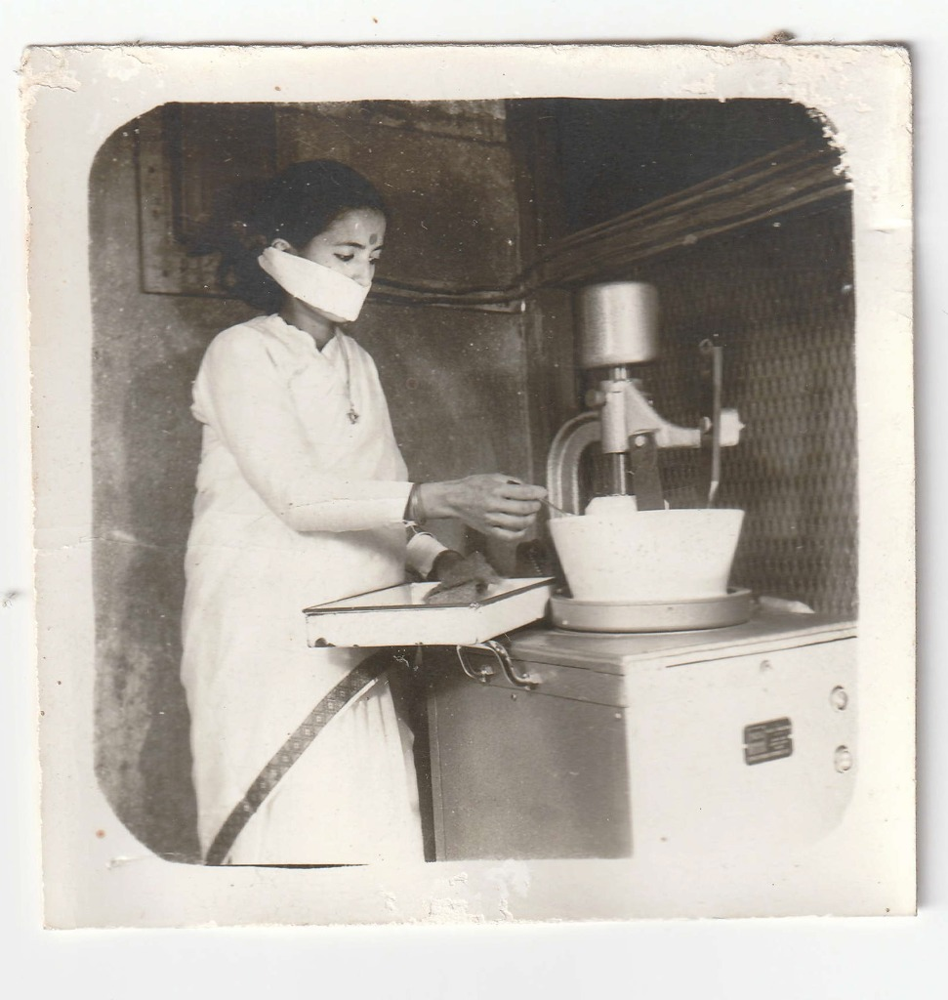

SHREE KRISHNA AUSHADHALAYA
श्री कृष्ण औषधालय
परम्परागत आयुर्वेदिक चिकित्सा · बागबजार
A Baidya family Ayurvedic clinic and botanical pharmacy — practising classical medicine, personal consultation, and in-house compounding at this address in Bagbazar, Kathmandu.
Pharmacy 7 AM– 8 PM daily · Consultations 9 – 11 AM, Sun–Fri · 01-5322079

A family Ayurvedic institution in the heart of Kathmandu
Doctor Consultation
In-person constitutional pulse diagnosis (Nadi Pariksha) and individualized Ayurvedic therapies.
Sun–Fri · 9:00 AM – 11:00 AM
Saturday Closed for Doctor Visits
Herbal Pharmacy
Direct counter fulfillment of classical formulations, churnas, vatis, rasayanas, and single herbs.
Daily · 7:00 AM – 8:00 PM
Open 365 Days a Year
Licensed Compounding
In-house botanical milling, purification, and licensed manufacturing according to classical texts.
Authentic Sourcing
Himalayan High-Altitude Herbs
Formulation Partners
Custom botanical formulations and wholesale preparation for wellness partners across Europe.
International Compounding
European Partner Network
1968
Bagbazar, Kathmandu
ऐतिहासिक अभिलेख — २०२५ वि.सं.
FIG. 01 · CORNER RIGHT
Shree Krishna Aushadhalaya
Historic ochre building & timber shopfront
The Shree Krishna Aushadhalaya shopfront appears at the right-hand corner. From the quiet dirt road of 1968 to today’s paved commercial street, our family institution has maintained an unbroken physical sanctuary of traditional Ayurvedic medicine at this exact location. Historical royal associations and physician correspondence remain preserved in our family archives.
CONTINUITY OF STEWARDSHIP
A Living Practice
The surrounding city transformed around this corner. The dispensary doors continue to open daily at this same threshold—practicing what was inherited.
The Working Apothecary
Inside Shree Krishna Aushadhalaya · Historical Photographic Record
Preserved as un-retouched scans from the Baidya family archive, these photographs document the people, machinery, and compounding activity inside the institution. No dates were recorded on the original prints.
Ayurveda is not simply what we sell.
It is the practice we inherited.
Transmitted across generations of practicing Baidyas, our clinic embodies diagnostic intuition, pulse reading mastery, and compounding standards maintained through decades of continuous practice at this address in Bagbazar.
The formulations on our shelves are compounded according to authoritative pharmacopeias—not as museum specimens, but as daily clinical care prepared for the individual constitution of each patient who enters our dispensary.

Classical Preparations & Botanical Compounding
An in-house compendium of 37 proprietary and classical formulations prepared from ethically sourced Himalayan minerals and wild-harvested botanicals.
INDEX CLASSIFICATION:
PLATE 01
CATALOG REF. SK-SPEC-01
HIGH-ALTITUDE MINERAL EXUDATE

Shuddha Shilajit
शुद्ध शिलाजीतPurified high-altitude Himalayan mineral resin harvested from cliff faces. Rejuvenative rasayana rich in fulvic acid, known for cellular stamina, deep mineral balance, and restorative vitality.
- ORIGIN
- High Himalayan Rock Strata
- STANDARD
- Purified & Classical Triphala Shodhana
- DISPENSING
- Available in Traditional Presentation Box at Counter
PLATE 02
CATALOG REF. SK-SPEC-02
SINGLE HERB ROOT POWDER

Ashwagandha Churna
अश्वगन्धा चूर्णPure Withania somnifera root milled in-house. A premier adaptogenic botanical supporting nervous system calming, sound sleep, physical vigor, and musculoskeletal strength.
- ORIGIN
- Selected Botanical Roots
- MILLING
- Stone-milled at Bagbazar premises
- AUTHENTICITY
- Traditional Shree Krishna Aushadhalaya Label & Seal
PLATE 03
CATALOG REF. SK-SPEC-03
CLASSICAL COMPOUND VATI

Triphala Tablets
त्रिफला वटीThe revered classical triad of Haritaki, Bibhitaki, and Amalaki compressed into convenient traditional vatis. Gently regulates digestive Agni, clears metabolic residue, and tones tissue vitality.
- FORMULA
- Classical Charaka Samhita Proportion
- THERAPEUTIC ACTION
- Tridoshic Digestive Harmony
- PRESERVATION
- Glass Container Preservation at Bagbazar Counter
PLATE 04
CATALOG REF. SK-SPEC-04
CLASSICAL RESPIRATORY COMPOUND

Sitopaladi Churna
सितोपलादि चूर्णTime-honored blend of Vanshlochan, Pippali, Ela, Twak, and rock sugar crystals. Traditionally prescribed for throat soothing, upper respiratory ease, mucosal balance, and post-seasonal recovery.
- COMPOUNDING
- Micro-pulverized Himalayan botanicals
- TRADITIONAL ANUPANA
- Prescribed with raw honey or pure ghee carrier
- DISPENSING
- Sealed Apothecary Dispensary Bottle
Consultation at Bagbazar
In-person pulse diagnosis, constitutional care, and continuous dispensary counseling in Bagbazar under registered Ayurvedic practitioner stewardship.
CONSULTATION HOURS
09:00 — 11:00
Sunday through Friday
Saturday — Closed for Doctor Consultations
Morning clinical diagnosis focuses on constitutional balance (Prakriti), pulse characteristics (Nadi Pariksha), and metabolic vitality. While scheduled doctor visits run 9:00 to 11:00 AM, our senior physician and registered practitioners remain on hand at the dispensary counter to answer questions, explain medicine courses, and assist patients with unhurried care.
A DAY AT THE AUSHADHALAYA
-
07:00
Dispensary Doors Open Morning medicine collection, fresh decoctions, and walk-in pharmacy fulfillment.
-
09:00
Clinical Doctor Consultations Begin Pulse diagnosis, patient examinations, constitutional assessments, and personalized prescriptions.
-
11:00 & Beyond
Dispensary Guidance & Compounding Morning pulse visits transition to on-counter patient guidance, custom formulation fulfillment, and extended physician consultation as needed.
-
Throughout the Day
Continuous Ayurvedic Care Licensed Ayurvedic practitioners remain present at the counter for prescription refills, formulation guidance, and vehicle carrier (anupana) instructions.
-
20:00
Evening Dispensary Close Dispensary closes after full day of community care. Open 7 days a week.
From Bagbazar to international partners.
Drawing upon generations of botanical expertise in the Himalayas, Shree Krishna Aushadhalaya compounds and supplies authentic Ayurvedic formulations for wellness partners across Europe and beyond.
Classical Formulation
Authentic preparation according to canonical Ayurvedic texts.
Custom Compounding
Formulations tailored to partner-specific specifications and standards.
Licensed Manufacturing
In-house processing adhering to traditional purification methodologies.
International Supply
Reliable botanical supply to partner companies across Europe.

Bagbazar Through the Lens
Authentic glimpses of our landmark premises, signage, dispensary interior, and historic neighbourhood.


Locating the Aushadhalaya
Located on Bagbazar road in central Kathmandu, welcoming patients and visitors daily.
EXACT ADDRESS
Shree Krishna Aushadhalaya
Bagbazar, Ward No. 28 (formerly Ward 31)
Kathmandu 44600, Nepal
Coordinates: 27°42'21.0"N 85°19'04.0"E
OPERATING TIMINGS
Herbal Pharmacy & Dispensary
07:00 — 20:00 · Open 365 Days Daily
Doctor Consultations
09:00 — 11:00 · Sunday through Friday
(Closed Saturday for doctor visits)